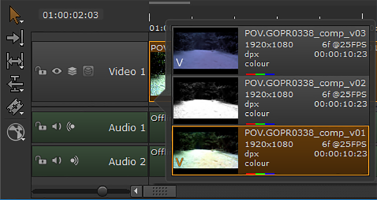

如前所述，版本在垃圾箱和序列中的行为相似，但是按序列交换版本可以让您更容易地比较结果。
注意: 当剪辑作为序列打开时，您不能使用版本，也就是说，使用右键单击 打开 > 时间线视图 选项。
找到摄入的版本剪辑并将其拖动到时间轴，右键单击并选择 版本 菜单:
• 扫描版本 定位剪辑的新版本。
• 版本向上 或 版本下降 将版本增加一个。
• 转到 最低 或 最大版本 .
提示: 您也可以使用 Alt 向上 / 向下箭头 键盘快捷键增加版本或 Alt 转变 向上 / 向下箭头 达到最大值或最小值。
扫描版本后，在时间轴上选择剪辑实例，然后按 V 在方便的窗口中显示该项目的所有可用版本。

选择所需的剪辑实例版本以设置 活动版本 .
|
|